mouse lung
[1]:
import matplotlib.pyplot as plt
from spider import SPIDER
op = SPIDER()
import anndata
import scanpy as sc
import squidpy as sq
import pandas as pd
import numpy as np
# use cpus only
import os
os.environ['CUDA_VISIBLE_DEVICES'] = '-1'
TF_ENABLE_ONEDNN_OPTS = 0
2023-06-23 11:06:36.081379: I tensorflow/core/util/port.cc:110] oneDNN custom operations are on. You may see slightly different numerical results due to floating-point round-off errors from different computation orders. To turn them off, set the environment variable `TF_ENABLE_ONEDNN_OPTS=0`.
2023-06-23 11:06:36.083314: I tensorflow/tsl/cuda/cudart_stub.cc:28] Could not find cuda drivers on your machine, GPU will not be used.
2023-06-23 11:06:36.121342: I tensorflow/tsl/cuda/cudart_stub.cc:28] Could not find cuda drivers on your machine, GPU will not be used.
2023-06-23 11:06:36.122193: I tensorflow/core/platform/cpu_feature_guard.cc:182] This TensorFlow binary is optimized to use available CPU instructions in performance-critical operations.
To enable the following instructions: AVX2 AVX512F AVX512_VNNI FMA, in other operations, rebuild TensorFlow with the appropriate compiler flags.
2023-06-23 11:06:37.071464: W tensorflow/compiler/tf2tensorrt/utils/py_utils.cc:38] TF-TRT Warning: Could not find TensorRT
[3]:
ds = 'mouse_lung'
sample_name = 'D2'
out_f = f'../datasets/{ds}/{sample_name}/'
adata = anndata.read_h5ad(f'{out_f}/adata.h5ad')
[ ]:
R_path = 'your R path'
[ ]:
no_spatalk = False
if len(adata) > 10000:
no_spatalk=True
idata = op.prep(adata, out_f, R_path, cluster_key=adata.uns['cluster_key'], is_human=adata.uns['is_human'], coord_type=adata.uns['coord_type'], no_spatalk=no_spatalk)
idata, meta_idata = op.find_svi(idata, out_f, R_path, alpha=0.3)
idata.write_h5ad(f'{out_f}/idata.h5ad')
[4]:
idata = anndata.read_h5ad(f'{out_f}/idata.h5ad')
metrics
[30]:
svi_df, svi_df_strict = op.svi.combine_SVI(idata,threshold=0.01)
op.svi.eva_SVI(idata, svi_df_strict)
plt.savefig(f'../figures/{ds}_{sample_name}_metric.png', dpi=300,bbox_inches='tight')
Using the results from SVI identification methods: ['SOMDE' 'SpatialDE' 'SPARKX' 'nnSVG' 'scGCO' 'gearyC' 'moranI']
303/1919 SVIs identified (threshold=0.01).
evaluating with ['moranI' 'gearyC' 'SOMDE' 'nnSVG']
p-value annotation legend:
ns: p <= 1.00e+00
*: 1.00e-02 < p <= 5.00e-02
**: 1.00e-03 < p <= 1.00e-02
***: 1.00e-04 < p <= 1.00e-03
****: p <= 1.00e-04
Geary
C (rev.)_SVI vs. Geary
C (rev.)_Excluded: Mann-Whitney-Wilcoxon test two-sided with Benjamini-Hochberg correction, P_val:3.010e-97 U_stat=4.298e+05
Moran
I_SVI vs. Moran
I_Excluded: Mann-Whitney-Wilcoxon test two-sided with Benjamini-Hochberg correction, P_val:3.193e-97 U_stat=4.297e+05
FSV
(SOMDE)_SVI vs. FSV
(SOMDE)_Excluded: Mann-Whitney-Wilcoxon test two-sided with Benjamini-Hochberg correction, P_val:4.470e-24 U_stat=3.338e+05
LR
(SOMDE)_SVI vs. LR
(SOMDE)_Excluded: Mann-Whitney-Wilcoxon test two-sided with Benjamini-Hochberg correction, P_val:1.532e-93 U_stat=4.261e+05
LR
(nnSVG)_SVI vs. LR
(nnSVG)_Excluded: Mann-Whitney-Wilcoxon test two-sided with Benjamini-Hochberg correction, P_val:4.332e-155 U_stat=4.668e+05
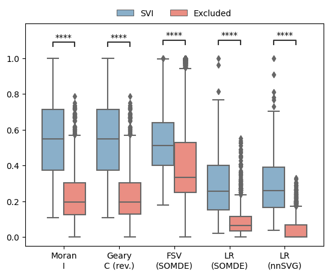
[ ]:
op.util.adata_moranI(adata, out_f=out_f)
plt.rcParams['font.size'] = 13
merged_df,lri_pw_list,gene_lr_list,gene_pw_list = op.vis.svg_svi_relation(adata, idata, title=sample_name, is_human=adata.uns['is_human'], top=50)
plt.savefig(f'../figures/{ds}_{sample_name}_relation.png', dpi=600,bbox_inches='tight')
[8]:
import gseapy
membership=pd.get_dummies(merged_df.set_index('Term')['group']).groupby('Term').sum().astype(str).agg('-'.join, axis=1).reset_index()
for x in membership[0].unique():
sub_df = merged_df[merged_df.Term.isin(membership[membership[0]==x].Term)]
if len(sub_df.Term.unique())>20:
ax = gseapy.dotplot(sub_df, title='',cmap='viridis_r', size=20, figsize=(3,8),top_term=30,show_ring=True, ofname=f'../figures/{ds}_{sample_name}_svgi_pw_{x}.png')
elif len(sub_df.Term.unique())>10:
ax = gseapy.dotplot(sub_df, title='',cmap='viridis_r', size=20, figsize=(3,6),top_term=30,show_ring=True, ofname=f'../figures/{ds}_{sample_name}_svgi_pw_{x}.png')
elif len(sub_df.Term.unique())<5:
ax = gseapy.dotplot(sub_df, title='',cmap='viridis_r', size=30, figsize=(3,8),top_term=30,show_ring=True, ofname=f'../figures/{ds}_{sample_name}_svgi_pw_{x}_large.png')
ax = gseapy.dotplot(sub_df, title='',cmap='viridis_r', size=100, figsize=(3,1),top_term=30,show_ring=True, ofname=f'../figures/{ds}_{sample_name}_svgi_pw_{x}_small.png')
else:
ax = gseapy.dotplot(sub_df, title='',cmap='viridis_r', size=10, figsize=(3,8),top_term=30,show_ring=True, ofname=f'../figures/{ds}_{sample_name}_svgi_pw_{x}_large.png')
ax = gseapy.dotplot(sub_df, title='',cmap='viridis_r', size=50, figsize=(3,2),top_term=30,show_ring=True, ofname=f'../figures/{ds}_{sample_name}_svgi_pw_{x}_small.png')
[9]:
op.vis.pattern_LRI(idata,show_SVI=10, spot_size=1)
plt.tight_layout()
plt.savefig(f'../figures/{ds}_{sample_name}_patterns.png', dpi=600,bbox_inches='tight')

[10]:
op.svi.eva_pattern(idata)
plt.savefig(f'../figures/{ds}_{sample_name}_pattern_metric.png', dpi=600,bbox_inches='tight')
p-value annotation legend:
ns: p <= 1.00e+00
*: 1.00e-02 < p <= 5.00e-02
**: 1.00e-03 < p <= 1.00e-02
***: 1.00e-04 < p <= 1.00e-03
****: p <= 1.00e-04
9_no vs. 9_yes: Mann-Whitney-Wilcoxon test two-sided with Benjamini-Hochberg correction, P_val:7.387e-09 U_stat=0.000e+00
0_no vs. 0_yes: Mann-Whitney-Wilcoxon test two-sided with Benjamini-Hochberg correction, P_val:4.313e-05 U_stat=0.000e+00
1_no vs. 1_yes: Mann-Whitney-Wilcoxon test two-sided with Benjamini-Hochberg correction, P_val:5.733e-84 U_stat=5.350e+02
2_no vs. 2_yes: Mann-Whitney-Wilcoxon test two-sided with Benjamini-Hochberg correction, P_val:1.185e-168 U_stat=6.610e+02
3_no vs. 3_yes: Mann-Whitney-Wilcoxon test two-sided with Benjamini-Hochberg correction, P_val:3.868e-111 U_stat=2.503e+03
4_no vs. 4_yes: Mann-Whitney-Wilcoxon test two-sided with Benjamini-Hochberg correction, P_val:1.642e-19 U_stat=9.500e+01
5_no vs. 5_yes: Mann-Whitney-Wilcoxon test two-sided with Benjamini-Hochberg correction, P_val:3.827e-03 U_stat=0.000e+00
6_no vs. 6_yes: Mann-Whitney-Wilcoxon test two-sided with Benjamini-Hochberg correction, P_val:1.171e-77 U_stat=1.130e+03
7_no vs. 7_yes: Mann-Whitney-Wilcoxon test two-sided with Benjamini-Hochberg correction, P_val:3.827e-03 U_stat=0.000e+00
8_no vs. 8_yes: Mann-Whitney-Wilcoxon test two-sided with Benjamini-Hochberg correction, P_val:4.313e-05 U_stat=0.000e+00
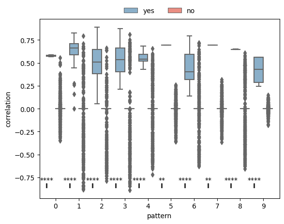
[11]:
idata = idata[:, idata.var['is_svi']==1]
[12]:
adata, adata_lri, adata_pattern = op.cell_transform(idata, adata, label=adata.uns['cluster_key'])
Added key cell_pattern in idata.uns
Added key cell_score in idata.uns
Added key interaction_pattern, interaction_score in adata.obsm
WARNING: Default of the method has been changed to 't-test' from 't-test_overestim_var'
WARNING: Default of the method has been changed to 't-test' from 't-test_overestim_var'
Added key rank_interaction_score_groups, rank_interaction_pattern_groups in adata.uns
[13]:
with plt.rc_context():
sc.pl.rank_genes_groups_dotplot(adata_lri, standard_scale='var', show=False)
plt.savefig(f'../figures/{ds}_{sample_name}_label_SVI.png', bbox_inches="tight")
WARNING: dendrogram data not found (using key=dendrogram_annotation). Running `sc.tl.dendrogram` with default parameters. For fine tuning it is recommended to run `sc.tl.dendrogram` independently.
WARNING: You’re trying to run this on 304 dimensions of `.X`, if you really want this, set `use_rep='X'`.
Falling back to preprocessing with `sc.pp.pca` and default params.
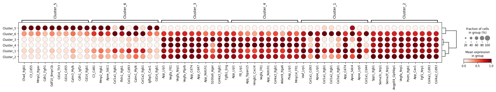
[14]:
with plt.rc_context():
sc.pl.rank_genes_groups_dotplot(adata_lri, standard_scale='var', n_genes=1, show=False)
plt.savefig(f'../figures/{ds}_{sample_name}_label_SVI1.png', bbox_inches="tight")
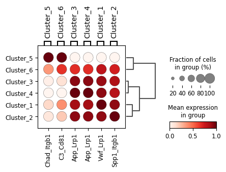
[15]:
with plt.rc_context():
sc.pl.rank_genes_groups_dotplot(adata_pattern, standard_scale='var', n_genes=1, show=False)
plt.savefig(f'../figures/{ds}_{sample_name}_label_pattern.png', bbox_inches="tight")
WARNING: dendrogram data not found (using key=dendrogram_annotation). Running `sc.tl.dendrogram` with default parameters. For fine tuning it is recommended to run `sc.tl.dendrogram` independently.
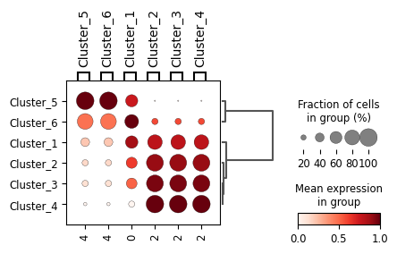
[26]:
from scipy import stats
pds = []
for i in adata_lri.var_names:
pds.append(pd.get_dummies(adata.obs['annotation']).corrwith(adata_lri.to_df()[i].astype('float'), method=stats.pointbiserialr)[:1])
pds_df = pd.concat(pds)
pds_df.index = adata_lri.var_names
adata.obs[['row', 'col']] = adata.obs[['row', 'col']].astype(int)
useful_df = []
plt.rcParams.update({'font.size': 14})
for cluster_i in adata.obs['annotation'].unique():
df_sub = pds_df[pds_df[cluster_i]>0.5][cluster_i].sort_values(ascending=False)
if len(df_sub) > 0:
useful_df.append(df_sub)
markers = df_sub.index.to_numpy()[:10]
corrs = df_sub.values[:10]
cluster_name = df_sub.name
plt.figure(figsize=(4*(len(markers)+1), 4))
base = 1
plt.subplot(1, len(markers)+1, base)
plt.scatter(adata.obs['row'],adata.obs['col'], c=adata.obs['annotation']==cluster_i, s=0.5, cmap='plasma')
plt.axis('equal')
plt.axis('off')
plt.title(f'{cluster_name}\n({sample_name})')
base += 1
marker_score = adata_lri.to_df()[markers]
marker_score = pd.concat([adata_lri.obs[['row', 'col']], marker_score], axis=1)
for i in range(len(markers)):
plt.subplot(1, len(markers)+1, base)
im=plt.scatter(marker_score['row'],marker_score['col'], c=marker_score[markers[i]], s=0.5, cmap='plasma')
plt.colorbar(im,fraction=0.046, pad=0.04)
plt.axis('equal')
plt.axis('off')
plt.title(f'{markers[i]}\ncorr={"%.3f" % corrs[i]}')
base += 1
plt.savefig(f'../figures/{ds}_{sample_name}_{cluster_name}.png', dpi=300,bbox_inches='tight')
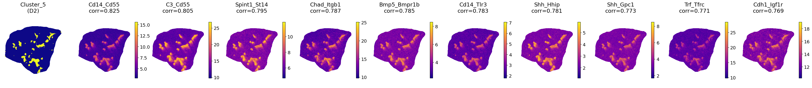
[17]:
arr = []
for cluster_i in adata.obs['annotation'].unique():
df_sub = pds_df[pds_df[cluster_i]>0.5][cluster_i].sort_values(ascending=False)
for j in df_sub.index:
arr.append([cluster_i, j])
celltype_lris = pd.DataFrame(arr, columns=['celltype', 'lri']).set_index('lri')
merged_df, arr = op.er.enrichment_interacrtion_gene_df(celltype_lris, groupby='celltype', is_human=False)
merged_df = merged_df[merged_df['Adjusted P-value'] < 0.05]
merged_df[merged_df.Term.str.contains('adhesion')]
[17]:
| Gene_set | Term | Overlap | P-value | Adjusted P-value | Old P-value | Old Adjusted P-value | Odds Ratio | Combined Score | Genes | celltype | ordered_celltype | |
|---|---|---|---|---|---|---|---|---|---|---|---|---|
| 5 | KEGG_2019_Mouse | Focal adhesion | 16/199 | 2.000088e-13 | 5.200230e-12 | 0 | 0 | 15.233232 | 445.426017 | ITGB1;LAMA5;ITGA4;LAMA2;ITGB4;CAV1;ITGA2;LAMC2... | Cluster_5 | Cluster_5 |
| 8 | KEGG_2019_Mouse | Cell adhesion molecules (CAMs) | 14/170 | 5.006878e-12 | 8.678588e-11 | 0 | 0 | 15.385173 | 400.325406 | ITGB1;ITGA4;SDC4;SDC2;SDC3;ITGB2;PTPRM;L1CAM;P... | Cluster_5 | Cluster_5 |
[18]:
adata.obsm['spatial'] = adata.obsm['spatial'].astype(int)
sc.pl.spatial(adata, color=['Scgb1a1', 'Scgb3a2', 'Cyp2f2', 'Hp'], spot_size=1.5)
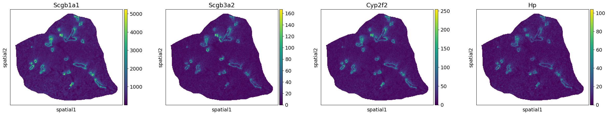
[19]:
corr_df = pd.concat([adata.to_df()[['Scgb1a1', 'Scgb3a2', 'Cyp2f2', 'Hp']].loc[adata_lri.obs_names], adata_lri.to_df()], axis=1).corr(method='pearson')
corr_df_asyn = corr_df.loc[adata_lri.var_names, ['Scgb1a1', 'Scgb3a2', 'Cyp2f2', 'Hp']]
plt.rcParams.update({'font.size': 15})
corrs = corr_df_asyn.mean(1).sort_values(ascending=False).values[:10]
lris = corr_df_asyn.mean(1).sort_values(ascending=False).index[:10]
marker_score = adata_lri.to_df()[lris]
adata.obs[['row', 'col']] = adata.obs[['row', 'col']].astype(int)
adata_lri.obs[['row', 'col']] = adata_lri.obs[['row', 'col']].astype(int)
plt.figure(figsize=(44, 4))
base=1
plt.subplot(1, 11, base)
im=plt.scatter(adata.obs['row'],adata.obs['col'], c=adata.to_df()['Scgb1a1'], s=0.05, cmap='plasma',vmin=0)
plt.colorbar(im,fraction=0.046, pad=0.04)
plt.axis('equal')
plt.axis('off')
plt.title('Bronchioli\nScgb1a1')
base+=1
for i in range(len(lris)):
plt.subplot(1, 11, base)
im=plt.scatter(adata_lri.obs['row'],adata_lri.obs['col'], c=marker_score[lris[i]], s=0.05, cmap='plasma')
plt.colorbar(im,fraction=0.046, pad=0.04)
plt.axis('equal')
plt.axis('off')
plt.title(f'{lris[i]} \n corr={"%.3f" % corrs[i]}')
base += 1
plt.tight_layout()
plt.savefig(f'../figures/{ds}_{sample_name}_BronchioliMarker.png', dpi=600,bbox_inches='tight')
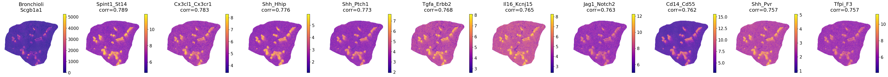
[20]:
decon = pd.read_csv(f'{out_f}/decon.csv', index_col=0)
corr_df = pd.concat([decon.T, adata_lri.to_df().loc[decon.columns]], axis=1).corr(method='pearson')
corr_df_asyn = corr_df.loc[adata_lri.var_names, decon.index]
mask = corr_df_asyn.loc[corr_df_asyn.idxmax()].to_numpy().diagonal() > 0.3
decon_meta = pd.concat([decon.T, adata_lri.obs.loc[decon.columns]], axis=1)
decon_meta[['row', 'col']] = decon_meta[['row', 'col']].astype(int)
[21]:
corr_df_asyn.loc[corr_df_asyn.idxmax()[mask], corr_df_asyn.idxmax()[mask].index]
[21]:
| Adventitial Fibroblast | Alveolar Fibroblast | Ciliated | |
|---|---|---|---|
| Col1a1_Itgb1 | 0.359339 | -0.177670 | 0.085492 |
| Fn1_Itga3 | -0.148156 | 0.331211 | -0.407077 |
| C3_Cd55 | 0.068300 | -0.267983 | 0.716132 |
[22]:
plt.rcParams.update({'font.size': 15})
corrs = corr_df_asyn[corr_df_asyn['Adventitial Fibroblast']>0.3]['Adventitial Fibroblast'].sort_values(ascending=False).values[:10]
lris = corr_df_asyn[corr_df_asyn['Adventitial Fibroblast']>0.3]['Adventitial Fibroblast'].sort_values(ascending=False).index[:10]
marker_score = adata_lri.to_df().loc[decon.columns, lris]
plt.figure(figsize=(44, 4))
base=1
plt.subplot(1, 11, base)
cell_meta_sub=decon_meta[decon_meta['Adventitial Fibroblast']>0].sort_values('Adventitial Fibroblast')
im=plt.scatter(decon_meta['row'],decon_meta['col'], c=decon_meta['Adventitial Fibroblast'], s=1, cmap='plasma',vmin=0, edgecolors='none')
plt.scatter(cell_meta_sub['row'],cell_meta_sub['col'], c=cell_meta_sub['Adventitial Fibroblast'], s=3, cmap='plasma',vmin=0, edgecolors='none')
plt.colorbar(im,fraction=0.046, pad=0.04)
plt.axis('equal')
plt.axis('off')
plt.title(f'Adventitial\nFibroblast')
base+=1
for i in range(len(lris)):
plt.subplot(1, 11, base)
im=plt.scatter(decon_meta['row'],decon_meta['col'], c=marker_score[lris[i]], s=1, cmap='plasma', edgecolors='none')
plt.colorbar(im,fraction=0.046, pad=0.04)
plt.axis('equal')
plt.axis('off')
plt.title(f'{lris[i]} \n corr={"%.3f" % corrs[i]}')
base += 1
plt.tight_layout()
plt.savefig(f'../figures/{ds}_{sample_name}_AdventitialFibroblast.png', dpi=600,bbox_inches='tight')
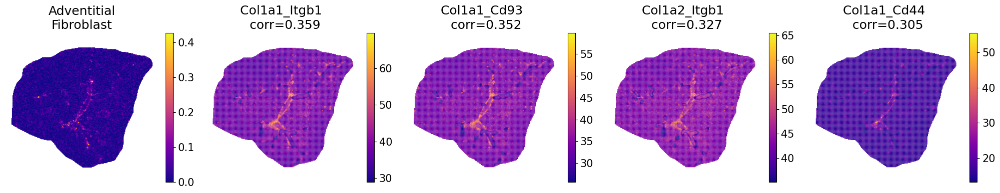
[23]:
plt.rcParams.update({'font.size': 22})
corrs = corr_df_asyn[corr_df_asyn['Alveolar Fibroblast']>0.3]['Alveolar Fibroblast'].sort_values(ascending=False).values[:10]
lris = corr_df_asyn[corr_df_asyn['Alveolar Fibroblast']>0.3]['Alveolar Fibroblast'].sort_values(ascending=False).index[:10]
marker_score = adata_lri.to_df().loc[decon.columns, lris]
plt.figure(figsize=(44, 4))
base=1
plt.subplot(1, 11, base)
im=plt.scatter(decon_meta['row'],decon_meta['col'], c=decon_meta['Alveolar Fibroblast'], s=0.05, cmap='plasma',vmin=0)
plt.colorbar(im,fraction=0.046, pad=0.04)
plt.axis('equal')
plt.axis('off')
plt.title(f'Alveolar\nFibroblast')
base+=1
for i in range(len(lris)):
plt.subplot(1, 11, base)
im=plt.scatter(decon_meta['row'],decon_meta['col'], c=marker_score[lris[i]], s=0.05, cmap='plasma')
plt.colorbar(im,fraction=0.046, pad=0.04)
plt.axis('equal')
plt.axis('off')
plt.title(f'{lris[i]} \n corr={"%.3f" % corrs[i]}')
base += 1
plt.tight_layout()
plt.savefig(f'../figures/{ds}_{sample_name}_AlveolarFibroblast.png', dpi=600,bbox_inches='tight')
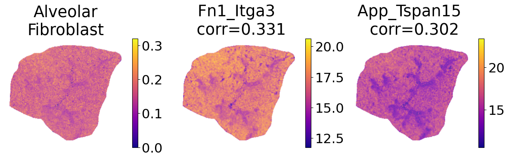
[24]:
plt.rcParams.update({'font.size': 22})
corrs = corr_df_asyn[corr_df_asyn['Ciliated']>0.3]['Ciliated'].sort_values(ascending=False).values[:10]
lris = corr_df_asyn[corr_df_asyn['Ciliated']>0.3]['Ciliated'].sort_values(ascending=False).index[:10]
marker_score = adata_lri.to_df().loc[decon.columns, lris]
plt.figure(figsize=(44, 4))
base=1
plt.subplot(1, 11, base)
im=plt.scatter(decon_meta['row'],decon_meta['col'], c=decon_meta['Ciliated'], s=0.05, cmap='plasma',vmin=0)
plt.colorbar(im,fraction=0.046, pad=0.04)
plt.axis('equal')
plt.axis('off')
plt.title(f'Ciliated')
base+=1
for i in range(len(lris)):
plt.subplot(1, 11, base)
im=plt.scatter(decon_meta['row'],decon_meta['col'], c=marker_score[lris[i]], s=0.05, cmap='plasma')
plt.colorbar(im,fraction=0.046, pad=0.04)
plt.axis('equal')
plt.axis('off')
plt.title(f'{lris[i]} \n corr={"%.3f" % corrs[i]}')
base += 1
plt.tight_layout()
plt.savefig(f'../figures/{ds}_{sample_name}_Ciliated.png', dpi=600,bbox_inches='tight')
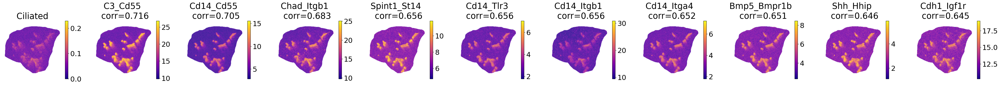
[25]:
arr = []
for cluster_i in corr_df_asyn.columns:
df_sub = corr_df_asyn[corr_df_asyn[cluster_i]>0.3][cluster_i].sort_values(ascending=False)
for j in df_sub.index:
arr.append([cluster_i, j])
celltype_lris = pd.DataFrame(arr, columns=['celltype', 'lri']).set_index('lri')
merged_df, arr = op.er.enrichment_interacrtion_gene_df(celltype_lris, groupby='celltype', is_human=False)
merged_df[merged_df['celltype']=='Adventitial Fibroblast']
[25]:
| Gene_set | Term | Overlap | P-value | Adjusted P-value | Old P-value | Old Adjusted P-value | Odds Ratio | Combined Score | Genes | celltype | ordered_celltype | |
|---|---|---|---|---|---|---|---|---|---|---|---|---|
| 0 | KEGG_2019_Mouse | ECM-receptor interaction | 4/83 | 1.373998e-09 | 3.984595e-08 | 0 | 0 | 1008.405063 | 20577.050828 | COL1A1;ITGB1;COL1A2;CD44 | Adventitial Fibroblast | Adventitial Fibroblast |
| 1 | KEGG_2019_Mouse | Proteoglycans in cancer | 4/203 | 5.111211e-08 | 7.411255e-07 | 0 | 0 | 397.909548 | 6680.600671 | COL1A1;ITGB1;COL1A2;CD44 | Adventitial Fibroblast | Adventitial Fibroblast |
| 2 | KEGG_2019_Mouse | Platelet activation | 3/125 | 2.361533e-06 | 2.282816e-05 | 0 | 0 | 244.340164 | 3165.719885 | COL1A1;ITGB1;COL1A2 | Adventitial Fibroblast | Adventitial Fibroblast |
| 3 | KEGG_2019_Mouse | Focal adhesion | 3/199 | 9.561469e-06 | 6.932065e-05 | 0 | 0 | 151.522959 | 1751.267396 | COL1A1;ITGB1;COL1A2 | Adventitial Fibroblast | Adventitial Fibroblast |
| 4 | KEGG_2019_Mouse | PI3K-Akt signaling pathway | 3/357 | 5.491577e-05 | 2.721312e-04 | 0 | 0 | 83.224576 | 816.408960 | COL1A1;ITGB1;COL1A2 | Adventitial Fibroblast | Adventitial Fibroblast |
| 5 | KEGG_2019_Mouse | Human papillomavirus infection | 3/360 | 5.630301e-05 | 2.721312e-04 | 0 | 0 | 82.512605 | 807.366248 | COL1A1;ITGB1;COL1A2 | Adventitial Fibroblast | Adventitial Fibroblast |
| 6 | KEGG_2019_Mouse | Protein digestion and absorption | 2/90 | 1.984964e-04 | 8.223420e-04 | 0 | 0 | 150.810606 | 1285.621178 | COL1A1;COL1A2 | Adventitial Fibroblast | Adventitial Fibroblast |
| 7 | KEGG_2019_Mouse | AGE-RAGE signaling pathway in diabetic complic... | 2/101 | 2.500134e-04 | 8.873096e-04 | 0 | 0 | 133.979798 | 1111.227915 | COL1A1;COL1A2 | Adventitial Fibroblast | Adventitial Fibroblast |
| 8 | KEGG_2019_Mouse | Amoebiasis | 2/106 | 2.753719e-04 | 8.873096e-04 | 0 | 0 | 127.506410 | 1045.219504 | COL1A1;COL1A2 | Adventitial Fibroblast | Adventitial Fibroblast |
| 9 | KEGG_2019_Mouse | Relaxin signaling pathway | 2/131 | 4.202923e-04 | 1.218848e-03 | 0 | 0 | 102.666667 | 798.188163 | COL1A1;COL1A2 | Adventitial Fibroblast | Adventitial Fibroblast |
| 10 | KEGG_2019_Mouse | Leishmaniasis | 1/67 | 1.663967e-02 | 3.751034e-02 | 0 | 0 | 75.488636 | 309.198881 | ITGB1 | Adventitial Fibroblast | Adventitial Fibroblast |
| 11 | KEGG_2019_Mouse | Arrhythmogenic right ventricular cardiomyopath... | 1/72 | 1.787250e-02 | 3.751034e-02 | 0 | 0 | 70.154930 | 282.337966 | ITGB1 | Adventitial Fibroblast | Adventitial Fibroblast |
| 12 | KEGG_2019_Mouse | Bacterial invasion of epithelial cells | 1/74 | 1.836528e-02 | 3.751034e-02 | 0 | 0 | 68.226027 | 272.719431 | ITGB1 | Adventitial Fibroblast | Adventitial Fibroblast |
| 13 | KEGG_2019_Mouse | Pertussis | 1/76 | 1.885787e-02 | 3.751034e-02 | 0 | 0 | 66.400000 | 263.662767 | ITGB1 | Adventitial Fibroblast | Adventitial Fibroblast |
| 14 | KEGG_2019_Mouse | Hypertrophic cardiomyopathy (HCM) | 1/86 | 2.131785e-02 | 3.751034e-02 | 0 | 0 | 58.558824 | 225.346680 | ITGB1 | Adventitial Fibroblast | Adventitial Fibroblast |
| 15 | KEGG_2019_Mouse | Dilated cardiomyopathy (DCM) | 1/90 | 2.230046e-02 | 3.751034e-02 | 0 | 0 | 55.915730 | 212.655798 | ITGB1 | Adventitial Fibroblast | Adventitial Fibroblast |
| 16 | KEGG_2019_Mouse | Small cell lung cancer | 1/92 | 2.279147e-02 | 3.751034e-02 | 0 | 0 | 54.681319 | 206.770246 | ITGB1 | Adventitial Fibroblast | Adventitial Fibroblast |
| 17 | KEGG_2019_Mouse | Hematopoietic cell lineage | 1/94 | 2.328228e-02 | 3.751034e-02 | 0 | 0 | 53.500000 | 201.163359 | CD44 | Adventitial Fibroblast | Adventitial Fibroblast |
| 18 | KEGG_2019_Mouse | Toxoplasmosis | 1/108 | 2.671244e-02 | 4.077161e-02 | 0 | 0 | 46.467290 | 168.333612 | ITGB1 | Adventitial Fibroblast | Adventitial Fibroblast |
| 19 | KEGG_2019_Mouse | Leukocyte transendothelial migration | 1/115 | 2.842390e-02 | 4.121465e-02 | 0 | 0 | 43.598684 | 155.234203 | ITGB1 | Adventitial Fibroblast | Adventitial Fibroblast |
| 20 | KEGG_2019_Mouse | Tight junction | 1/167 | 4.106239e-02 | 5.340999e-02 | 0 | 0 | 29.862952 | 95.342328 | ITGB1 | Adventitial Fibroblast | Adventitial Fibroblast |
| 21 | KEGG_2019_Mouse | Cell adhesion molecules (CAMs) | 1/170 | 4.178751e-02 | 5.340999e-02 | 0 | 0 | 29.328402 | 93.122308 | ITGB1 | Adventitial Fibroblast | Adventitial Fibroblast |
| 22 | KEGG_2019_Mouse | Phagosome | 1/180 | 4.420137e-02 | 5.340999e-02 | 0 | 0 | 27.675978 | 86.321357 | ITGB1 | Adventitial Fibroblast | Adventitial Fibroblast |
| 23 | KEGG_2019_Mouse | Axon guidance | 1/180 | 4.420137e-02 | 5.340999e-02 | 0 | 0 | 27.675978 | 86.321357 | ITGB1 | Adventitial Fibroblast | Adventitial Fibroblast |
| 24 | KEGG_2019_Mouse | Rap1 signaling pathway | 1/209 | 5.117410e-02 | 5.921625e-02 | 0 | 0 | 23.782452 | 70.693855 | ITGB1 | Adventitial Fibroblast | Adventitial Fibroblast |
| 25 | KEGG_2019_Mouse | Regulation of actin cytoskeleton | 1/217 | 5.309043e-02 | 5.921625e-02 | 0 | 0 | 22.892361 | 67.206446 | ITGB1 | Adventitial Fibroblast | Adventitial Fibroblast |
| 26 | KEGG_2019_Mouse | Epstein-Barr virus infection | 1/229 | 5.595912e-02 | 6.010424e-02 | 0 | 0 | 21.674342 | 62.490029 | CD44 | Adventitial Fibroblast | Adventitial Fibroblast |
| 27 | KEGG_2019_Mouse | MicroRNAs in cancer | 1/281 | 6.830989e-02 | 7.074952e-02 | 0 | 0 | 17.602679 | 47.240322 | CD44 | Adventitial Fibroblast | Adventitial Fibroblast |
| 28 | KEGG_2019_Mouse | Pathways in cancer | 1/535 | 1.267949e-01 | 1.267949e-01 | 0 | 0 | 9.110955 | 18.815803 | ITGB1 | Adventitial Fibroblast | Adventitial Fibroblast |